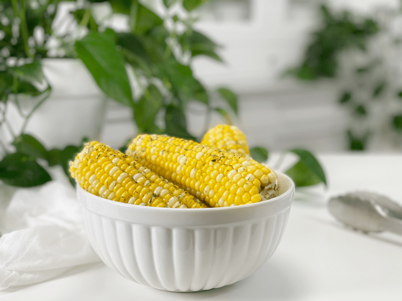

Corn on the Cob | Steaming – Instant Pot | Oil-Free
Lately, I have seen organic corn in the grocery stores. What a treat! When I make it for Bob, he lets me know that he doesn’t want/need anything else… he just wants to get full on the corn. As an Instant Pot lover, I decided this was going to become my new method for preparing it. I am not a fan of boiling, since nutrients are lost in the water, so I typically steam.

In order to make delicious corn on the cob, you need good quality corn. First and foremost, try to eat only organic, as most corn is GMO. Buy it in season for the best taste, and use the best cooking technique to lock in flavor and nutrition.
Selecting Corn on the Cob
- Before you walk out of the store with the corn, pull the husks back to check for worms, a valid concern. They hatch in the sticky silks and burrow through to the tips of the ears.
- Husks – Look for green, tight, and not dried out. Check for little holes in the husk. Those are wormholes. You don’t want those.
- Kernels – Look for bright, plump, milky, tightly arranged rows.
- Silk – The silky strands should be soft, moist, pale golden, and slightly sticky.
- Bottom (where it was broken off the stalk) – Best if pale in color. If it’s brown, it’s most likely not fresh.
- Give it a good squeeze from the bottom up. It should feel solid and round and the kernels firm and filled out from end to end.
- Buy organic, NON-GMO!!
Storing Corn on the Cob
Ideally, you should cook and consume the corn on the cob on the day it was picked, but most of us don’t get that lucky. If you have an abundance of corn, please ship some to me…if that’s not an option, you can freeze it.
Freezer
- Cook the corn as instructed below. Once the corn ears have cooled completely, hold the corn upright with one hand at the top end and use a knife to cut the corn off of the cob. Spoon the corn into freezer-safe containers or bags. It is best to squeeze all of the air out, so it doesn’t get freezer-burned. Don’t forget to label it with the date. Freeze for up to 8 months.
Fridge
- Keeping fresh corn from drying out is critical.
- Store the ears wrapped tightly in a plastic bag with their husks on to protect the flavor.
Why I Love Using My Instant Pot
- It maximizes nutrient retention, compared to traditional cooking methods.
- Quick and easy way to make perfectly juicy and tender corn–no staring at water, encouraging it to boil.
- While it builds pressure and cooks, you can take a quick 5-minute break.
 Ingredients
Ingredients
Serves 1 if you have a Bob in your house, otherwise 4
- 4 ears organic corn on the cob
- 1.5 -2 cups water
Preparation
- Clean the corn by removing the husks and silk.
- You can cook the ears with the husks on, but add 1 more minute to the cooking time.
- Pour 1.5 cups of cold water in the Instant Pot.
- If you have a 6-quart unit, use 1 1/2 cups of water (2 cups for the 8-quart)
- Place the steamer basket in the Instant Pot, followed by 4 ears of corn.
- Depending on the size of the ears, you may need to cut them in half.
- Layer the corn in alternating patterns for better heat surfaces to be reached.
- Secure the lid, set the pressure release knob to “Seal,” and cook at High Pressure for 3 minutes.
- Once the machine beeps and the LCD screen reads “L0:00,” flip the pressure release valve to “venting” to release all of the pressure.
- Open the lid carefully and remove the corn with tongs.
- Sprinkle with salt, pepper, and dill!
- Leftovers can be stored in an airtight container in the refrigerator for up to 5 days. The next day it tastes incredible, even cold!
© AmieSue.com